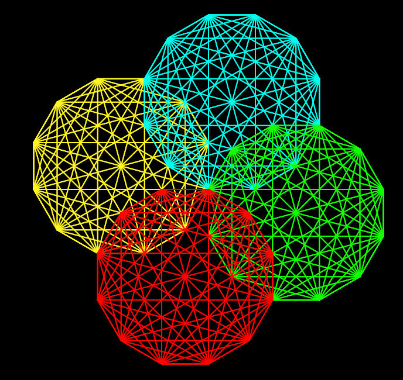
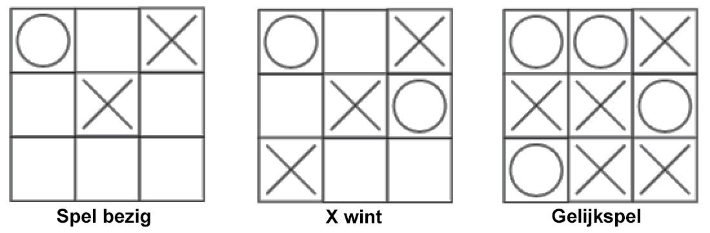

Terug naar de inhoudsopgave.
Hoofdstuk 4 Les 1: Betrouwbare communicatie

Wat is het internet?
Netwerk-redundantie
Adres-hiërarchie
Een korte geschiedenis van het internet
Hoofdstuk 4 Les 2: Communicatieprotocollen
Adressen in een netwerk van netwerken: IP
Betrouwbare communicatie over onbetrouwbare verbindingen: TCP
Een hiërarchie van open protocollen
Van wie is het internet?
Hoofdstuk 4 Les 3: Cybersecurity
Cryptografie
Symmetrische cryptografie
Caesarcijfer project
Public key encryptie
Cybersecurity
Wie maalt om encryptie?
Hoofdstuk 4 Les 4: Communities en online interactie

Communicatie en community
Cyberpesten
Censuur
Zoekmachines
Hoofdstuk 4 Les 5: Computers en werk
Verleden en toekomst
Werkomstandigheden
Werken op afstand